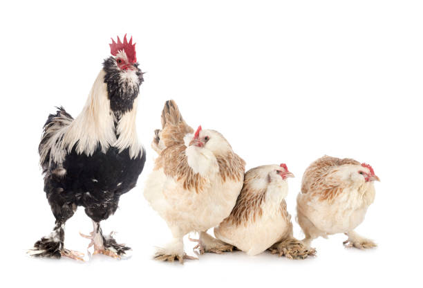
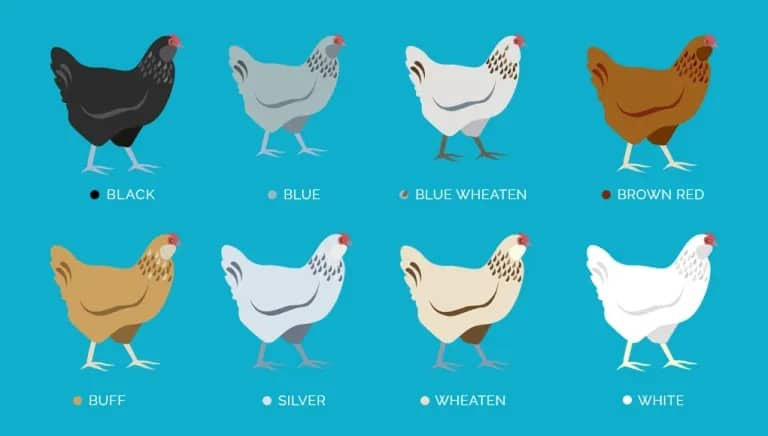
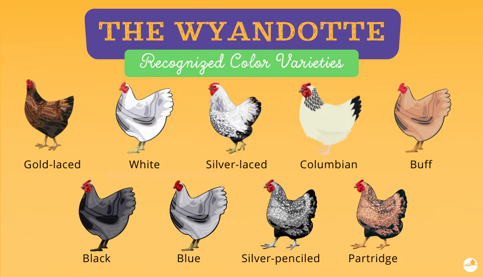

Ava Taylor
My Favorite Chicken Breeds
PS: Try viewing this on your phone *wink*
Salmon Faverolle
These are very beautiful chickens. The royal gold-tan color combination of the hens and the stark black-white color cominbation of the roosters. I had two of these chickens when I was in middle school. I was supposed to only get hens but sometimes sexing isn't always accurate all the time so one of the chickens I got was a rooster. He was one of my favorites out of all of my chickens and his name was Pixie—the hen's name was Wave. Unfortunately, we had to send Pixie away so he wouldn't make any chicks with my hens. But this took a turn for the worst when he was attacked and killed by a fox while under the buyers care.
Ameraucana
I adore the many coats that these chickens can strut! I had, like the Salmon Faverolle, two of these. They were named Bun and Mohawk. Mohawk was my favorite and she is currently at my old middle school with the rest of her flock. I do miss Mohawk. I always say, "Oh, I need to visit them again soon" but I never make any plans. I think it would be nice to visit them again with my friend who raised another flock as a Capstone Project with me.
Wyandotte
Whether the coat be silver-laced, gold-laced, partridge this chicken never fails to impress. I had two of these chickens. One gold-laced and one silver-laced. While all chickens have a different personality, chicken to chicken, I'd describe this breed as stuck up and disapproving. They are not very socialable with humans but don't behave outliyingly with their flock. They don't enjoy being held and seem to tense up when I put them between my chest and arms. If given the chance, this chicken will flee the scene, thrusting out her wings and flapping maddly away.